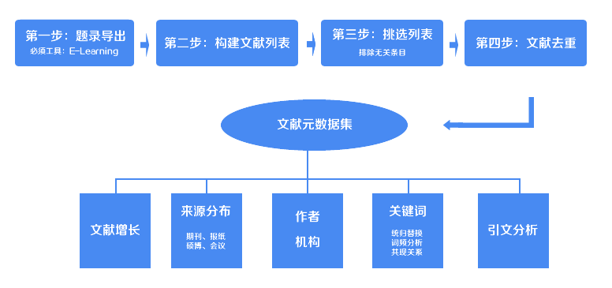

文献统计与分析在线辅助工具 简介：本工具用于对某个研究领域的相关文献进行统计和文献条目处理。通过本工具的处理，你可以轻松快速的获得这些研究文献的年度、作者、机构、关键词等的基础信息，再通过excel最处理即可获得你想要的结果。 使用：使用本工具的前提是，你通过CNKI进行在线检索，将检索结果导出为E-Learning的格式，并且通过E-Learning获得了需要的基础数据。可能你一下子无法理解，按照提示一步一步的去做即可。  马上开始 了解 建议